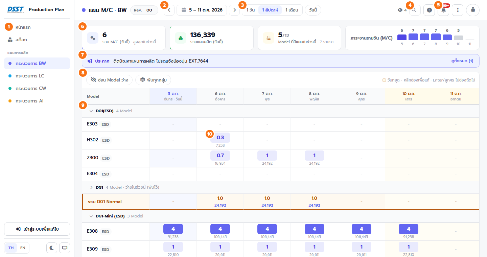
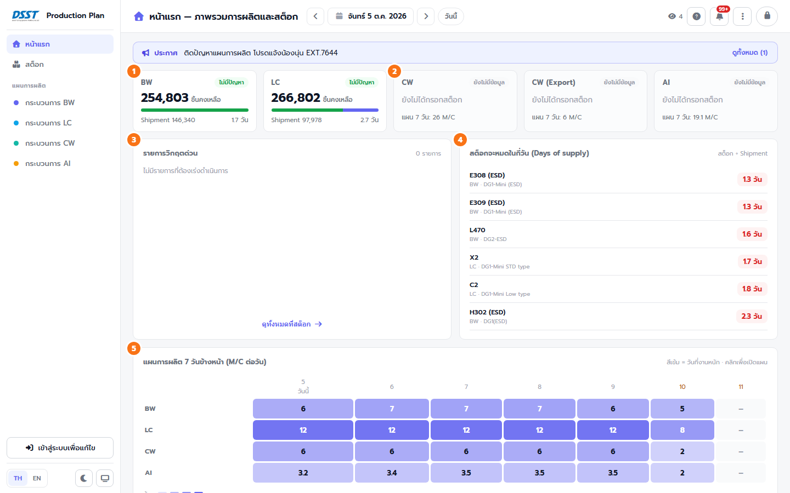
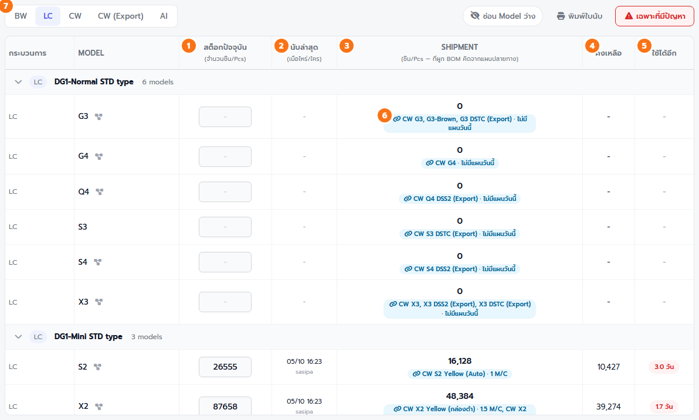

สำหรับทุกคน — ไม่ต้องเข้าสู่ระบบ
เปิดดูแผนการผลิต สต็อก และประกาศได้ทันที ข้อมูลอัปเดตเองอัตโนมัติทุก ~15 วินาที ไม่ต้องกดรีเฟรช
เปิดดูแผนการผลิต สต็อก และประกาศได้ทันที ข้อมูลอัปเดตเองอัตโนมัติทุก ~15 วินาที ไม่ต้องกดรีเฟรช
ส่วนประกอบหน้าจอ

เมนูซ้าย
- หน้าแรก — ภาพรวมการผลิตและสต็อกทุกกระบวนการ
- สต็อก — ตัวเลขแดงข้างเมนู = จำนวน Model ที่สต็อกต่ำ/วิกฤตอยู่ตอนนี้
- แผนการผลิต BW / LC / CW / AI — จุดสีหน้าชื่อใช้แยกกระบวนการ
- ล่างสุด: เปลี่ยนภาษา TH / EN, โหมดมืด , โหมดจอทีวี
แถบด้านบน
- 5 – 11 ต.ค. — กดลูกศรเลื่อนทีละช่วง กดที่วันที่เพื่อเลือกจากปฏิทิน
- 1 วัน · 1 สัปดาห์ · 1 เดือน เปลี่ยนความยาวช่วงที่ดู · วันนี้ กลับมาวันปัจจุบัน
- จำนวนคนที่เปิดหน้านี้อยู่ (กดดูรายชื่อ) · ค้นหา Model
- การอัปเดตล่าสุด — ใคร แก้ process ไหน Model อะไร เมื่อไหร่ · ส่งออก CSV / PDF
หน้าแรก

- แถบประกาศ — แสดงบรรทัดแรก กด ดูทั้งหมด เพื่ออ่านครบ
- การ์ด 5 กระบวนการ (BW, LC, CW, CW (Export), AI) — สต็อกคงเหลือ, Shipment, ใช้ได้อีกกี่วัน; ถ้ายังไม่มีข้อมูลสต็อกจะแสดง "แผน 7 วัน" แทน · กดการ์ดเพื่อเปิดหน้านั้น
- สีป้ายสถานะ: ไม่มีปัญหา ต่ำ วิกฤต
- รายการวิกฤตด่วน และ สต็อกจะหมดในกี่วัน — Model ที่ใช้ได้ไม่เกิน 14 วัน เรียงจากน้อยไปมาก
- แผนการผลิต 7 วันข้างหน้า — จำนวนเครื่องรวมต่อวัน ยิ่งเข้มยิ่งใช้เครื่องมาก · กดแถวเพื่อเปิดแผนกระบวนการนั้น
- แผนผลิตรวมของวันนี้ (ชิ้น) และ Top Model ตามแผน 7 วันข้างหน้า
หน้าแผนการผลิต (BW / LC / CW / AI)
การ์ดสรุปด้านบน
- เครื่องรวมวันนี้ · ชิ้นตามแผนวันนี้ · จำนวน Model ที่มีแผนในช่วงนี้ · กราฟเครื่องรายวัน
อ่านตาราง
- แถบชื่อกลุ่ม (เช่น DG1-Mini (ESD)) — กดเพื่อพับ/กาง กลุ่มที่ว่างทั้งช่วงจะพับไว้ให้อัตโนมัติ · ปุ่ม พับทุกกลุ่ม
- ตัวเลขในช่อง = จำนวนเครื่อง (M/C) สีเข้มตามจำนวน: 1 2–3 4+ · ตัวเลขเล็กข้างใต้ = จำนวนชิ้นที่ผลิตได้
- คอลัมน์ วันนี้ สีม่วงอ่อน · วันหยุด (ส.–อา.) สีส้มอ่อน
- แถวรวม (รวม DG1 Normal, รวมทั้งหมด ฯลฯ) — เครื่องและชิ้นรวม พร้อมลูกศรเทียบสัปดาห์ก่อน
- ด่วน = Model ที่ต้องเร่ง · ● มุมช่อง = มีคอมเมนต์ (ข้อความสีส้มใต้ตัวเลข)
- ซ่อน Model ว่าง — ซ่อน Model ที่ไม่มีแผนในช่วงที่ดู
สูตรคำนวณชิ้น
ชิ้น = เครื่อง × Hrs/Day × 3600 ÷ MCT × OA%
หน้าสต็อก

- เลือกแท็บ BW · LC · CW · CW (Export) · AI · ปุ่ม เฉพาะที่มีปัญหา แสดงเฉพาะสต็อกต่ำ/วิกฤต
- กดแถบชื่อกลุ่มเพื่อกาง/พับ (กลุ่มที่มีปัญหากางไว้ให้ก่อน)
| คอลัมน์ | ความหมาย |
|---|---|
| สต็อกปัจจุบัน | จำนวนชิ้นที่นับได้ล่าสุด |
| นับล่าสุด | เมื่อไหร่ / ใครกรอก (ตัวแดง = เกิน 7 วันแล้ว ควรนับใหม่) |
| Shipment | จำนวนชิ้นที่จะใช้ต่อวัน · Model ที่ผูก BOM ไว้คิดจากแผนของกระบวนการที่ใช้มันในวันที่เลือกอัตโนมัติ: BW ← แผน LC, LC ← แผน CW (มีป้าย LC X2 · 5 M/C) |
| คงเหลือ | สต็อก − Shipment (ติดลบ = ไม่พอใช้วันนี้) |
| ใช้ได้อีก | จำนวนวันที่สต็อกพอใช้ ≤ 5 วัน ≤ 14 วัน > 14 วัน · Model ที่ผูก BOM คิดไล่ตามแผนปลายทางทีละวัน |
- ไอคอน ข้างชื่อ Model = ดูสายวัตถุดิบต้นทาง (เช่น CW ← LC ← BW) พร้อมสต็อกแต่ละชั้น
พิมพ์ / ส่งออก
- → ส่งออก PDF — ดูตัวอย่างก่อนพิมพ์ เลือกแนวตั้ง/แนวนอนได้ ระบบซ่อน Model ว่างและย่อให้พอดี 1 หน้า A4 ให้เอง
- → ส่งออก CSV — เปิดต่อใน Excel ได้
- หน้าสต็อก → พิมพ์ใบนับ — ใบนับสต็อกของแท็บที่เลือก ไว้เดินจดตัวเลข
อื่นๆ
- โหมดจอทีวี — ตัวหนังสือใหญ่ เต็มจอ สลับหน้าอัตโนมัติ เหมาะเปิดค้างบนจอรวม · กด Esc เพื่อออก
- โหมดมืด — ถนอมสายตาเวลาเปิดนานๆ
- ต้องการแก้ไขข้อมูล → กด เข้าสู่ระบบ มุมขวาบน (ขอบัญชีจากแอดมิน)
สำหรับผู้ที่เข้าสู่ระบบ
แอดมิน แก้ได้ทุกอย่าง · ผู้แก้ไขแผน (บัญชีที่ได้สิทธิ์บาง process) แก้ได้เฉพาะจำนวนเครื่อง/สต็อกของ process ที่ได้รับ — หัวข้อที่มี แอดมิน ทำได้เฉพาะแอดมิน
แอดมิน แก้ได้ทุกอย่าง · ผู้แก้ไขแผน (บัญชีที่ได้สิทธิ์บาง process) แก้ได้เฉพาะจำนวนเครื่อง/สต็อกของ process ที่ได้รับ — หัวข้อที่มี แอดมิน ทำได้เฉพาะแอดมิน
เข้าสู่ระบบกรอกแผนบันทึกเครื่องมือช่วยวางแผนAuto PlanModel / กลุ่มสต็อกใบนับสต็อกประกาศตั้งค่าระบบข้อควรระวัง
เข้า / ออกจากระบบ
- กด เข้าสู่ระบบ มุมขวาบน (หรือปุ่มล่าง sidebar) ใส่ชื่อผู้ใช้ + รหัสผ่าน
- เข้าแล้วมุมขวาบนจะเป็นชื่อของคุณ และเครื่องมือแก้ไขจะโผล่ที่ ล่าง sidebar
- ออกจากระบบ: กดที่ชื่อมุมขวาบน — ถ้ายังมีงานไม่บันทึก ระบบจะถามว่าจะบันทึกก่อนออกไหม
กรอกแผน (จำนวนเครื่อง)
- คลิกช่องแล้วพิมพ์จำนวนเครื่อง (ทศนิยมได้ เช่น 0.5, 1.5) · Enter ลงแถวถัดไป · ←↑→↓ เลื่อนช่อง
- วางจาก Excel: copy หลายช่องใน Excel แล้ววาง (Ctrl+V) ที่ช่องเริ่มต้น
- ย้ายหลายช่อง: ลากเมาส์คลุมหลายช่อง → Ctrl+C → คลิกช่องปลายทาง → Ctrl+V
- Hrs/Day แถวบนสุดของตาราง แอดมิน — ชั่วโมงทำงานของทั้งกระบวนการแต่ละวัน (ใส่ 0 = วันหยุด)
- OA% / MCT ในแถบชื่อกลุ่ม แอดมิน — ใช้คำนวณจำนวนชิ้น
- เลิกทำ / ทำซ้ำ แอดมิน — ปุ่มใน sidebar หรือ Ctrl+Z / Ctrl+Y
บันทึก และ ส่งแผน
- ทุกการแก้ไข ยังไม่ถึงคนอื่น จนกว่าจะกด บันทึก (มีจุดส้มที่ปุ่ม = ยังมีงานไม่บันทึก)
- ระบบส่งเฉพาะช่องที่แก้ไป จึงไม่ทับงานที่คนอื่นเพิ่งบันทึก · ระหว่างกำลังพิมพ์ ระบบจะไม่ดึงข้อมูลใหม่มาทับ
- Rev. ข้างชื่อหน้า แอดมิน — เลขรุ่นของแผน แก้ได้โดยคลิกที่ตัวเลข
- ส่งแผนให้ทีม แอดมิน — แจ้งเตือนทาง Microsoft Teams ว่าแผนกระบวนการไหนเปลี่ยน
เครื่องมือช่วยวางแผน
- คัดลอกจากช่วงก่อนหน้า — ดึงจำนวนเครื่องของช่วงก่อนหน้า (ยาวเท่าที่ดูอยู่) มาเป็นจุดตั้งต้น มีหน้าต่างให้ยืนยันก่อน
- → ลบข้อมูลช่วงวันที่ แอดมิน — ล้างแผนของช่วงที่เลือก
- → นำเข้า CSV แอดมิน — นำเข้าแผนจากไฟล์ที่ส่งออกไป (แก้ใน Excel แล้วนำกลับมา)
- คอมเมนต์ประจำช่อง แอดมิน — กดจุดเล็กมุมขวาบนของช่อง พิมพ์ข้อความ (ติดไปตอนพิมพ์ด้วย)
- ธงด่วน แอดมิน — กดไอคอนธงจางๆ หน้าชื่อ Model เพื่อติด/ยกเลิก "ด่วน"
Auto Plan — กรอกแค่ CW แล้ว LC / BW ตามมาเอง
- กรอกจำนวนเครื่อง CW ในช่วงที่ต้องการ แล้วกดปุ่ม สร้างแผน LC + BW จากแผน CW นี้ (บนตาราง CW) หรือ Auto Plan ใน sidebar
- ดูผลในหน้าต่าง: แถบ BOM บอกว่าผูกครบหรือยัง · ช่องสีม่วงอ่อน = จะเปลี่ยน · = ล็อกไว้ ไม่เขียนทับ · "ใช้สต็อก" = ส่วนที่เอาจากสต็อกแทนการผลิต
- กด นำไปใส่ในแผน LC / BW → ระบบพาไปหน้า LC ให้ตรวจ → กด บันทึก (ยังไม่มีอะไรถึงคนอื่นจนกว่าจะบันทึก)
ตัวเลือกในหน้าต่าง
- หักสต็อก LC/BW ที่มีอยู่ก่อน (เปิดไว้เป็นค่าเริ่มต้น) — ใช้สต็อกที่นับไว้ไปก่อน แล้ววางผลิตเฉพาะส่วนที่ขาด เช่น มี LC X2 อยู่ 87,658 ชิ้น วันแรกต้องใช้ 48,384 → ไม่ต้องผลิต วันถัดไปผลิตแค่ส่วนที่เกิน · ต้องกรอกสต็อกให้ตรงของจริง ไม่งั้นแผนเพี้ยน
- ปัดขึ้นทีละ 0.5 เครื่อง หรือเป็นเครื่องเต็ม · ผลิต LC ก่อน CW ใช้กี่วัน
- ล้างค่าเดิมของ Model ที่ไม่มีความต้องการ — ล้างเฉพาะ Model ที่อยู่ในสาย BOM
ล็อกช่องที่ปรับเอง
- ในตาราง LC/BW ชี้เมาส์ที่ช่องจะมีไอคอน มุมขวาล่าง กดเพื่อ ล็อก — ช่องที่ล็อกมีขอบประและไอคอน Auto Plan จะไม่เขียนทับ (กดอีกครั้งเพื่อปลด) · อย่าลืมบันทึก
แถบเตือนสีเหลืองบนหน้า LC / BW
- "แผน LC ไม่ตรงกับที่คำนวณจากแผน CW อยู่ N ช่อง" = มีคนแก้ CW (หรือสต็อกเปลี่ยน) หลังสร้างแผน → กด เปิด Auto Plan เพื่อตรวจ
ชิ้น LC ที่ต้องผลิต = ชิ้น CW × อัตราส่วน BOM − สต็อก LC ที่ยังเหลือ → เครื่อง LC = ชิ้น ÷ ชิ้นต่อเครื่องของ LC
งาน LC มีอายุ 14 วัน: ถ้าวันที่ต้องผลิต LC เป็นวันหยุด (Hrs/Day = 0) ระบบเลื่อนไปผลิตวันทำงานก่อนหน้าให้เอง ไม่เกิน 14 วัน · BW ผลิตวันเดียวกับ LC
Model ที่ยังไม่ได้ผูก BOM จะขึ้นเตือนและไม่ถูกนำไปคำนวณ — แอดมินกด "ไปผูก BOM ที่ขาด" ในหน้าต่างได้เลย · AI ยังไม่อยู่ในระบบ Auto Plan
จัดการ Model และกลุ่ม แอดมิน
- เพิ่ม Model — ปุ่ม เพิ่ม Model ท้ายแต่ละกลุ่ม
- แก้ชื่อ / ลบ — ชี้เมาส์ที่แถว Model จะมีปุ่ม ทางขวา
- จัดลำดับ — ลากที่จุดจับ หน้าชื่อ Model
- แก้ไขประเภท (ชื่อกลุ่ม) — ปุ่มในแถบชื่อกลุ่ม
- Cover (CW / AI) — พิมพ์รหัส Cover และเลือกสีได้ Model ที่ใช้รหัสเดียวกันได้สีเดียวกันอัตโนมัติ
สต็อก
- กรอก สต็อกปัจจุบัน และ Shipment ในตาราง (ผู้ที่ได้สิทธิ์ "Stock")
- Model ที่ผูก BOM: Shipment คิดให้เอง (กรอกเองไม่ได้) — BW จากแผน LC, LC จากแผน CW ของวันที่เลือก · ต้องการเปลี่ยนให้แก้ที่แผนปลายทางหรือ BOM
- เลือกหลาย Model: ติ๊กช่องหน้าชื่อ หรือ เลือกทั้งหมด แล้วใช้ เคลียร์ข้อมูลสต็อก / ลบ Model ใน sidebar แอดมิน
- ล้างสต็อกทุกกระบวนการ แอดมิน — ใช้ตอนเริ่มรอบนับใหม่ทั้งโรงงาน (Model ยังอยู่ ยอดว่างลง)
ใบนับสต็อก (นับด้วยกระดาษ)
- หน้าสต็อก เลือกแท็บ → พิมพ์ใบนับ · ตั้งการพิมพ์ ขนาดจริง 100% (ห้าม "ย่อให้พอดีหน้า")
- เดินนับ เขียนตัวเลข 1 หลักต่อ 1 ช่อง ชิดซ้าย ด้วยปากกา · ตัวที่ไม่ได้นับให้เว้นว่าง · ใบนับ 1 process อยู่ในแผ่นเดียว (Model เยอะแถวจะเตี้ยลง)
- เขียนผิด: ผิดตัวไหน ระบายช่องนั้นให้ทึบ ■ แล้วเขียนตัวที่ถูกในช่อง แก้ไข ท้ายแถว (ผิด 2 ตัว เขียน 2 ช่องเรียงซ้าย → ขวา) — ระบบแทนให้เอง · ห้ามเขียนทับหรือขีดฆ่าในช่อง · ถ้าระบายแต่ช่องแก้ไขไม่ครบ แถวนั้นจะขึ้นสีแดงให้กรอกเอง
- กลับมากรอกได้ 2 วิธี:
- กรอกจากใบนับ — พิมพ์ตามลำดับรหัสในใบ กด Enter ไล่ลงไป (วางคอลัมน์จาก Excel ได้)
- อ่านจากใบสแกน — สแกนใบนับเป็น PDF/รูป แล้วเลือกไฟล์ ระบบอ่านลายมือให้ (อ่านในเครื่อง ไม่ส่งข้อมูลออกนอกบริษัท)
- ตรวจช่อง สีเหลือง (อ่านไม่ชัด / ต่างจากครั้งก่อนมาก) เทียบกับรูปลายมือในแต่ละแถว → กด บันทึก
สแกนให้เห็นสี่เหลี่ยมดำครบ 4 มุม · สแกนกลับหัว/เอียงเล็กน้อยได้ · ถ้ารายชื่อ Model เปลี่ยนหลังพิมพ์ ระบบจะเตือน — ควรพิมพ์ใบใหม่ทุกรอบนับ
ประกาศ แอดมิน
- ที่หน้าแรก กด เพิ่มประกาศ ในแถบประกาศ
- เลือกได้ว่าให้แสดง ทุกหน้า หรือ เฉพาะกระบวนการ (BW/LC/CW/AI) — ประกาศของกระบวนการจะติดไปกับตอนพิมพ์แผนด้วย
- แก้/ลบ: กด "ดูทั้งหมด" แล้วใช้ปุ่ม · อย่าลืมกด บันทึก
ตั้งค่าระบบ แอดมิน
อยู่ที่ มุมขวาบน → ตั้งค่าระบบ
- จัดการผู้ใช้งาน — เพิ่ม/ลบบัญชี, รีเซ็ตรหัสผ่าน, กำหนดว่าแก้ได้เฉพาะ process ไหน (BW/LC/CW/AI/Stock) หรือเป็นแอดมิน
- จัดการแหล่งวัตถุดิบ (BOM) — ผูกว่า Model ไหนใช้วัตถุดิบจาก Model ไหน (CW ← LC ← BW) และ อัตราส่วน · ใช้ทั้ง Auto Plan, Shipment ของ BW/LC และสายวัตถุดิบในหน้าสต็อก
- ทดสอบแจ้งเตือน Teams — ลองส่งข้อความเพื่อเช็คว่าเชื่อมต่อ Teams ได้
- → เคล็ดลับการใช้งาน — สรุปปุ่มลัดคีย์บอร์ด
ข้อควรระวัง
- กดบันทึกก่อนปิดหน้า — ถ้าปิดทั้งที่ยังมีงานไม่บันทึก เบราว์เซอร์จะเตือน
- หลายคนแก้ ช่องเดียวกัน พร้อมกัน คนที่บันทึกทีหลังจะทับ — แก้คนละช่องได้ปกติ
- การลบ Model / ล้างสต็อก / ลบข้อมูลช่วงวันที่ ย้อนกลับไม่ได้ — ระบบจะให้ยืนยันก่อนทุกครั้ง
- ช่องที่มีคนอื่นเพิ่งแก้เข้ามาจะกะพริบสีม่วงสั้นๆ ให้เห็น